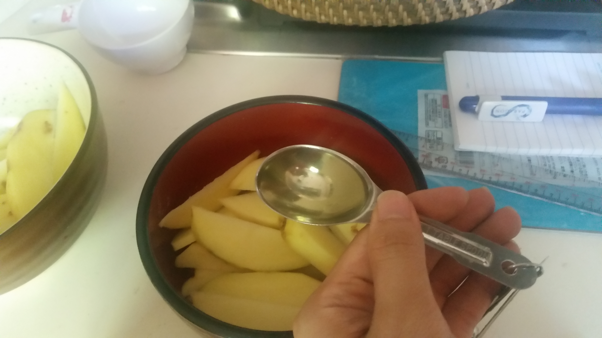
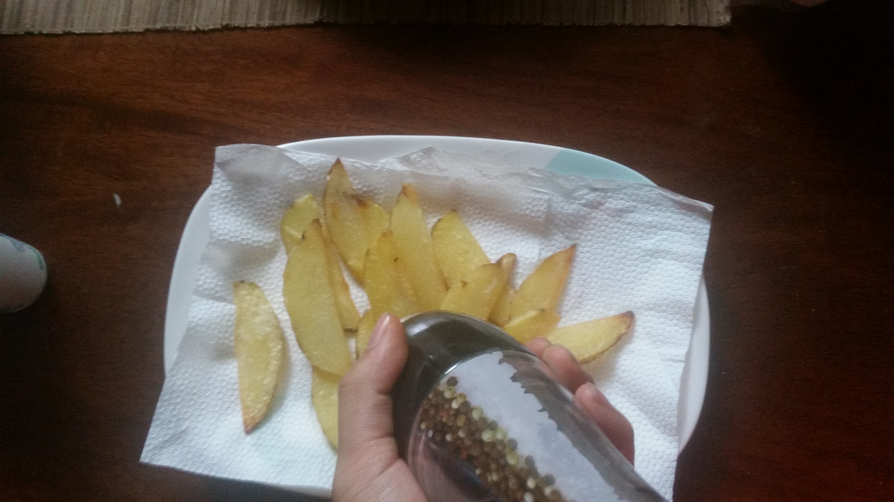
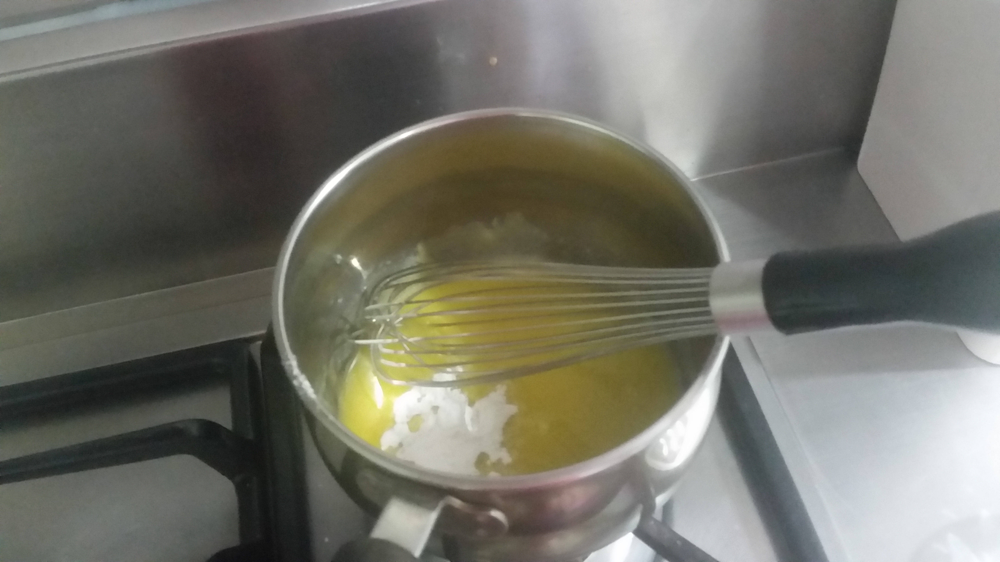
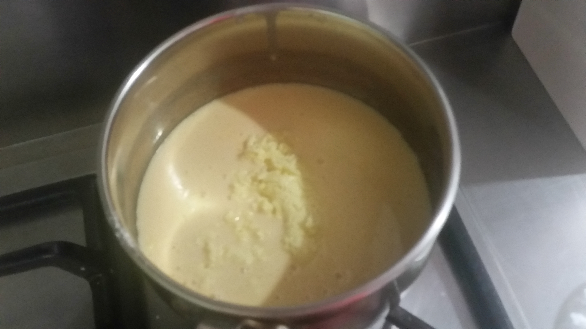

Ingredients
- White potatoes
- salt
- fresh pepper corns
- 6 tablespoon vegetable oil [for the mixing to potato wedges prior to baking]
- 2 tablespoon vegetable oil [for greasing the baking tray two times for every batch]
- 103 g Quickmelt Cheese – known as a Processed Filled Cheese Spread (Magnolia Cheese)
- 53 g salted butter (Magnolia Butter)
- 1 cup or 250 ml evaporated milk (Alaska Evaporated Filled Milk)
- 3 tablespoons or 27 g all-purpose flour (Magnolia All Purpose)
Procedure
- The potatoes were peeled and sliced to wedges with a stainless steel knife. Batch C was sliced in half lengthways then in thirds on a 60 degree angle. The potato wedges were then washed with water in a bowl and left to dry for a few minutes.
- Potato A: 201 g
- Potato B: 193 g
- Potato C: 238 g
- Potato A: 194 g, 16 wedges
- Potato B: 187 g, 12 wedges
- Potato C: 225 g, 16 wedges
- I mixed the potato wedges with vegetable oil by hand in the bowl, 2 tablespoons per batch. 
- I roasted the potato wedges in 3 batches based on the assigned baking durations under 175 degrees Celsius and there were 15 wedges of potato per batch: .
- Batch A – 10:00 minutes, flipped over, then cooked for another 10 minutes
- Batch B – 12:00 minutes, flipped over, then cooked for another 12 minutes
- Batch C – 14:00 minutes, flipped over, then cooked for another 14 minutes
- After baking, the potato wedges were taken off the tray with a metal spoon and placed on a plate with tissue paper to drain the oil. I seasoned the baked potato wedges with salt. Then using a pepper mill grinder, I went around the plates containing the potato wedges while turning the knob to season. 
- For the white cheese sauce, the butter was first melted in a medium sauce pan on low heat. Flour was added ¼ cup at a time to make a roux. 
- Later I added the milk ¼ cup at a time, whisking continuously with an egg beater for the mixture to blend and thicken. Then I last added the Quickmelt cheese and continued to stir the mixture until about 4:30 minutes passed. 
Weight of Potatoes before peeling:
Weight of Potatoes before peeling:

Feedback
- Texture: Batch B is the most preferred over A and C because the potato wedges were crispy on the outside and had enough moisture in the sense that they were not dry in the inside. Cheese sauce is less thick not and is more smooth and creamy.
- Taste/Flavor: Cheese flavor could be made a little stronger
- Appearance: Batch B potato wedges had enough potato in the inside and were very fluffy.
Recommendations
- For the cheese sauce, check other types of cheese or add more cheese next time
- The 60 degree cutting scheme on potatoes can be maintained
- Lessen the potato wedges to two batches on the next attempt
- Research on how to maintain moisture inside the potato wedges when taken out of the oven.
References
- Riches, D. (2018). thespruceEats. Cheesy Bechamel Sauce. Retrieved from https://www.thespruceeats.com/cheesy-bechamel-sauce-recipe-335001
- Denise. (2018). allrecipes. Oven-Baked Potato Fries. Retrieved from https://www.allrecipes.com/recipe/239143/oven-baked-potato-fries/
- (2018). StackExchange. What is a good way to cut potatoes into wedges. Retrieved from https://cooking.stackexchange.com/questions/8408/what-is-a-good-way-to-cut-potatoes-into-wedges
COPYRIGHT 2018 ALL RIGHTS RESERVED. THE FOODIE CRAFTSMAN. This website is for educational purposes only. CONTACT US Email: thefoodiecraftsman@gmail.com | Tel: +639178151032